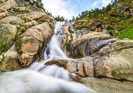

my visit is to black spring which is 5 kilometer away from kumrat mark. black spring is famous for a water which is cure for different
diseases like stomach, liver and some other diseases.
Explore the breathtaking meadows of Jahaz Banda, where the greenery stretches as far as the eye can see. It's a perfect spot for
a peaceful retreat surrounded by nature.
Embark on a trek to Katora Lake, a hidden gem tucked away in the mountains. The pristine blue waters reflect the beauty of the surrounding
landscape, making it a picturesque spot for nature lovers.
In the mid of valley there is a beautiful waterfall it is famous spot fo kumrat valley. people comes to this waterfall for enjoying every breeze of cold wind from waterfall.
Challenge yourself with the numerous trekking trails that Kumrat Valley offers. From easy walks to more challenging hikes, there's a route for every adventurer.
Experience the magic of Kumrat Valley by camping under a blanket of stars. The clear night skies provide a spectacular view of the cosmos, creating unforgettable memories
Engage with the warm and friendly locals to immerse yourself in the rich culture of Kumrat. Share stories, try local cuisine, and participate in traditional activities to get a true sense of the community.